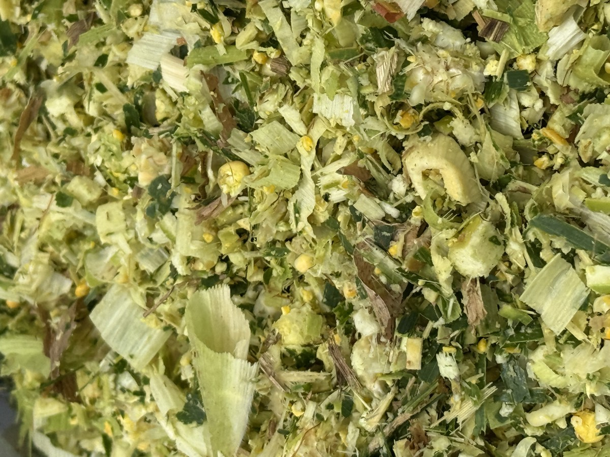

কোরবানির গরুর ব্যবসায় লাভ-লস ঠিক হয়ে যায় হাটে ওঠার অনেক আগে, গরু কেনার দিন আর খাদ্যের পরিকল্পনায়। যারা ঈদের ২-৩ মাস আগে তাড়াহুড়া করে নামেন, তাদের সামনে দুটি পথ থাকে: কম বাড়ন্ত গরু নিয়ে কম লাভ, নয়তো স্টেরয়েডের মতো ক্ষতিকর শর্টকাট। দুটোই লসের পথ। এই গাইডে আমরা নিরাপদ ও লাভজনক পথটা ধাপে ধাপে দেখাব।
জরুরি বিষয়
স্টেরয়েড, হরমোন ইনজেকশন বা ইউরিয়া সরাসরি খাইয়ে গরু ফোলানো গরুর জন্য প্রাণঘাতী, মাংস খাওয়া মানুষের জন্য ক্ষতিকর এবং ধরা পড়লে হাটে গরুর দাম অর্ধেকে নেমে যায়। এই গাইডের কোনো পদ্ধতিতে ওষুধ নেই। যেকোনো ওষুধ বা ভিটামিন ইনজেকশন শুধু রেজিস্টার্ড ভেটেরিনারি চিকিৎসকের পরামর্শে দেবেন।
সময়ের হিসাব: গরু কবে কিনবেন
মোটাতাজাকরণের স্বাভাবিক চক্র ৩-৪ মাস। এর সঙ্গে যোগ করুন নতুন গরুর ধকল কাটানো, কৃমিমুক্ত করা আর নতুন খাবারে অভ্যাস করানোর আরো ২-৩ সপ্তাহ। তাই হিসাবটা সহজ: ঈদুল আজহার অন্তত ৪-৫ মাস আগে গরু কিনে ফেলুন। ঈদের সঠিক তারিখ চাঁদ দেখার উপর নির্ভর করে, তবে আনুমানিক মাস ধরে পেছন দিকে গুনে নিজের ক্যালেন্ডার বানিয়ে নিন।
আগে কেনার আরেকটা বড় সুবিধা দামে। ঈদ যত কাছে আসে, চারা গরুর (ফ্রেমওয়ালা হাড় বড় গরু) দাম তত বাড়ে, কারণ সবাই তখন কিনতে নামে। মৌসুমের আগে কিনলে একই গরু কম দামে পাবেন।
কেমন গরু কিনবেন
- হাড়ের কাঠামো (ফ্রেম) বড় কিন্তু মাংস কম, এমন স্বাস্থ্যবান চারা গরুই মোটাতাজাকরণের জন্য সেরা। ফ্রেম বড় মানে মাংস ধরার জায়গা বেশি।
- চটপটে, চোখ উজ্জ্বল, নাক ভেজা, খেতে আগ্রহী গরু বাছুন। ঝিমানো বা খুঁড়িয়ে চলা গরু যত সস্তাই হোক, নেবেন না।
- কেনার পরপরই ভেটেরিনারি চিকিৎসক বা প্রাণিসম্পদ অফিসের পরামর্শে কৃমিনাশক ও প্রয়োজনীয় টিকা দিন। কৃমি না মেরে যত ভালো খাবারই দিন, খাবারের বড় অংশ নষ্ট হবে।
- প্রথম গরু হলে অভিজ্ঞ কাউকে সঙ্গে নিয়ে হাটে যান। বিস্তারিত খামার শুরুর গাইডে লিখেছি।
৩-৪ মাসের খাদ্য পরিকল্পনা
মোটাতাজাকরণের মূল কথা: সস্তা আঁশজাতীয় খাবারে পেট ভরানো আর দানাদারে বাড়তি শক্তি দেওয়া। এখানে সাইলেজ সবচেয়ে বড় সুবিধা দেয়, কারণ কাঁচা ঘাসের চেয়ে জোগাড়ের ঝামেলা নেই, সারা বছর একই দাম, আর গরু খুব আগ্রহ নিয়ে খায়। খামারভেস্ট সাইলেজ ব্যবহারকারী মোটাতাজাকরণ খামারিদের সাধারণ দৈনিক রেশন:
- সাইলেজ: ১০-২০ কেজি (সাধারণত ১৫ কেজি, গরুর ওজন অনুযায়ী)
- শুকনো খড়: ১-২ কেজি
- দানাদার মিশ্রণ (ভাঙা ভুট্টা, ভুসি, খৈল, চালের কুঁড়া): ওজন অনুযায়ী, প্রাণিসম্পদ কর্মকর্তার পরামর্শ মেনে
- লবণ ও ভিটামিন-মিনারেল মিশ্রণ: নিয়মিত, প্যাকেটের নির্দেশনা অনুযায়ী
- পরিষ্কার পানি: সবসময়
গরু আগে সাইলেজ না খেয়ে থাকলে প্রথমবার খাওয়ানোর নিয়ম মেনে ৭ দিনে ধীরে অভ্যাস করান। ওজন অনুযায়ী সঠিক পরিমাণ জানতে পরিমাণের হিসাব গাইড দেখুন, আর পুরো রেশনের বিস্তারিত আছে মোটাতাজাকরণের খাদ্য তালিকায়।
খাদ্য খরচের হিসাব
সাইলেজের হিসাবটা আগে থেকেই পরিষ্কার: দৈনিক ১৫ কেজি, কেজি ১০ টাকা দরে দিনে ১৫০ টাকা, মাসে ৪,৫০০ টাকা, ৪ মাসের চক্রে ১৮,০০০ টাকা। অর্থাৎ ৫০ কেজির বস্তায় মাসে ৯ বস্তা। এর সঙ্গে খড় ও দানাদারের খরচ যোগ হবে, যা আপনার এলাকার দামের উপর নির্ভর করে। পুরো চক্রের খরচ আর কত বস্তা লাগবে তা এক মিনিটে বের করতে আমাদের ফ্রি মোটাতাজাকরণ খরচ ক্যালকুলেটর ব্যবহার করুন।
একটা কথা পরিষ্কার বলি: গরু কত কেজি মাংস বাড়াবে বা হাটে কত লাভ হবে, তার নিশ্চিত অঙ্ক কেউ দিতে পারে না। তা নির্ভর করে গরুর জাত, স্বাস্থ্য, যত্ন আর হাটের বাজারের উপর। যে বিক্রেতা নিশ্চিত লাভের অঙ্ক বলে, তার কাছ থেকে সাবধান থাকুন।
স্টেরয়েড কেন লসের পথ
প্রতি বছর ঈদের আগে কিছু বেপারি স্টেরয়েড বা হরমোনে গরু ফোলায়। এতে গরুর শরীরে পানি জমে মোটা দেখায়, মাংস বাড়ে না। এমন গরুর শরীরে আঙুল চেপে ধরলে গর্ত বসে থাকে, গরু ঝিমায়, গরমে হাঁপায়। ক্রেতারা এখন এই লক্ষণগুলো চেনেন, হাটে পশু চিকিৎসকের টিমও থাকে। ধরা পড়লে গরু বিক্রিই কঠিন হয়ে যায়। তার উপর এমন গরু যেকোনো সময় মারা যেতে পারে, তখন পুরো পুঁজিটাই শেষ।
খাদ্যে মোটাতাজা করা গরু এর উল্টো: চটপটে, মাংস শক্ত, রং উজ্জ্বল। হাটে এই পার্থক্যটাই দাম বাড়িয়ে দেয়। ৪-৫ মাস সময় হাতে নিলে স্টেরয়েডের কোনো দরকারই পড়ে না।
শেষ মাসের প্রস্তুতি
- শেষ মাসে খাবারে হঠাৎ বড় পরিবর্তন আনবেন না। যা খেয়ে গরু বেড়েছে, তাই চালিয়ে যান।
- গরুকে নিয়মিত গোসল করান ও গোয়াল পরিষ্কার রাখুন। পরিষ্কার, উজ্জ্বল গরুর দিকেই ক্রেতার চোখ যায়।
- হাটে নেওয়ার ধকল কমাতে আগে থেকে গরুকে হাঁটার অভ্যাস করান, আর হাটের দিন পর্যাপ্ত পানি খাওয়ান।
- হাটে ওঠানোর আগে টিকা-কৃমির রেকর্ড সঙ্গে রাখুন। সচেতন ক্রেতার কাছে এটাই আপনার গরুর সার্টিফিকেট। রেকর্ড রাখতে ফ্রি টিকা ও কৃমিনাশক শিট প্রিন্ট করুন।
আর খাদ্যের জোগানটা আগে থেকেই নিশ্চিত করে রাখুন। খামারভেস্ট সাইলেজ ৫০ কেজির এয়ারটাইট বস্তায় সারাদেশে ক্যাশ অন ডেলিভারিতে পৌঁছায়, না-খোলা বস্তা ৬-১২ মাস ভালো থাকে। ফলে পুরো চক্রের সাইলেজ একবারে কিনে রাখলেও নষ্টের ভয় নেই।
খামারভেস্ট Facebook পেজ
কোরবানি মৌসুমের প্রস্তুতি, মোটাতাজাকরণের পরামর্শ ও সাইলেজ স্টক আপডেট পেতে ফেসবুকে যুক্ত থাকুন।